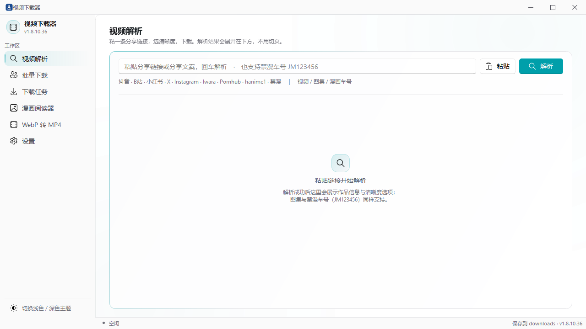

粘贴即解析
自动识别站点与链接类型，解析出清晰度列表；分享文案整段粘贴也能认出来，回车直接开始。YouTube 单视频最高 2160p，按高度聚合档位并自动配 m4a 音轨。
Windows 10 / 11 · Android 7.0+ · 本地运行
抖音、B站、小红书、X、Instagram、YouTube 等多站点的视频、图文与漫画，粘贴即解析。 多连接加速、整页批量、封面入库、WebP 与 GIF 转换——全部在你自己的电脑和手机上完成。

功能
从解析、下载到转换、阅读，一条链路在同一个窗口里闭环，不用再装五六个工具。
自动识别站点与链接类型，解析出清晰度列表；分享文案整段粘贴也能认出来，回车直接开始。YouTube 单视频最高 2160p，按高度聚合档位并自动配 m4a 音轨。
单个文件最多 32 条分段连接并发下载，弱网、跨境线路也能尽可能跑满带宽。
贴一个作者主页，整页作品一次抓取；按作者自动建目录，失败项可单独重试。
抖音图文里的 Live Photo 视频轨自动补齐、下载并转成 GIF，静态图与动图各走各的，互不阻塞。
多选或拖入，批量独立转换，也可按列表顺序合并成一个 MP4；保留每帧毫秒时长，透明区域合成到指定底色。
两遍调色板避免闪烁，支持片段截取、帧率与调色板档位；后台转换可随时取消，失败不留残片。
下载完成自动入库，封面、标题、时长一览；记住每部片的播放位置，下次从上次停下的地方继续。
文件夹即一本书，按自然排序翻页（第 2 章排在前面）；支持搜索、收藏、阅读进度与双页阅读。
需要登录的内容，可用内置浏览器登录流程导出 Cookie，或手动填写；凭据只存在本机配置文件里。
界面
左侧导航、内容画布、底部状态条常驻——后台任务数、保存目录和版本一眼可见。
粘贴一条链接，选清晰度，下载。解析结果展会在下方，不用切页。
下载
安装包与免安装版都在 GitHub Releases 上，附 SHA256 校验值。
Windows 10 / 11 · 64 位
完整功能：解析、批量、任务、漫画、本地视频、WebP 转 MP4、MP4 转 GIF，含 YouTube 单视频解析。
下载安装版 146 MB 免安装单文件版 · 120 MB SHA256 校验值Android 7.0+ · APK
系统分享即下载，下载完成自动导出到相册；内置离线漫画书架。
下载 APK 16.8 MB 查看版本说明需要历史版本？在 GitHub Releases 查看全部
更新日志
每个版本都附完整说明与校验值，升级前可以先看改了什么。
支持 watch / shorts / music / youtu.be 等链接，按高度聚合最多 8 档画质并自动配 m4a 音轨；高画质为 DASH 分离轨道，需要 ffmpeg 合并。解析与下载走系统代理，播放列表与频道链接本地拦截。
两遍调色板避免闪烁，支持起始时间与时长、帧率、宽度、颜色数与 Bayer 抖动；后台转换可取消，输出先写临时目录再原子发布。
整体视觉与交互重做，设置项重新分组；同时合入长期分支上的修复。
下载完成的视频自动入库，记封面与播放位置，支持倍速、全屏与键盘快捷键。
安卓端在 WebView 里拿不到抖音的作品详情，动图视频轨无法获取，按实际能力撤掉该功能（图文仍保存静态图）。同时给小红书解析的 HTTP 请求加 12 秒超时，失败时不再出现「点了解析一直没反应」。
Iwara 带签名取档位表，Pornhub 走 flashvars 与 get_media 两跳，hanime1 直接读页面视频源；三者免登录，解析后显示精确文件大小。
下载成功的漫画自动入库，断网也能读；移除时可选择仅移出书架或删除文件。
常见问题
不需要。下载安装版或免安装版直接运行；只有从源码运行时才需要 Python 3.10+ 与依赖。
不会。程序没有自建服务器，解析走各平台公开接口，Cookie 只保存在本机配置文件里，下载与转换全部在本机完成。
B 站与 YouTube 的 1080P 以上都是 DASH 音视频分离，需要 ffmpeg 合并。到「设置 → 合并组件（ffmpeg）」里下载一次即可，不是 pip 依赖。
启动解包需要可用的系统临时目录。可以改用文件夹版（需要与 _internal/ 一起保留），或清理异常的 TEMP 路径后重试。
目前只有 Windows 与 Android 两端。桌面端基于 PySide6，移植需要重做界面与浏览器登录链路，暂未计划。
PyInstaller 打包的程序常被启发式误报。可在 GitHub Releases 对照 SHA256 校验值确认文件一致；介意的话从源码运行。